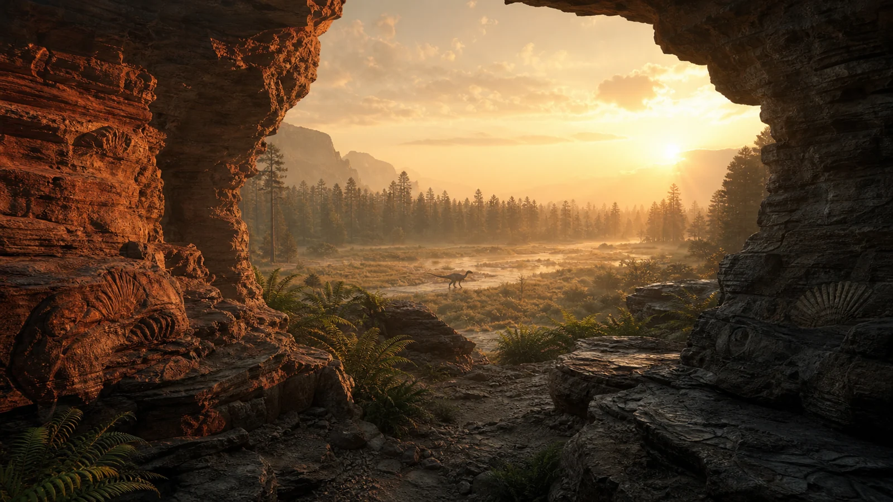

OPEN THE DEEP-TIME DOOR
Walk through three changing worlds. Meet small pioneers, feathered fliers and famous giants—and discover why they never all shared one stage.
♪Headphones recommended · narration can be changed any time
01 · SET THE TIME COMPASS
FIELD NOTES
Use the arrow buttons or ← and → to travel. Press 1–3 to answer a discovery, R to replay narration, C for the transcript, M for sound, P for the story panel, and L to change language.
Hide the glass story panel whenever you want a clearer view of the artwork. A discovery opens it automatically and restores your saved preference after you leave.
The prehistoric scenes are original AI-generated artist’s reconstructions made for this journey. They are guided by current evidence, but colors, soft tissues and behavior are partly uncertain. They are not photographs.
English narration uses the local Piper Lessac voice. Japanese narration uses the local Voicevox Shikoku Metan voice. Audio is generated and stored locally; no speech service is contacted while you watch.
Dates are rounded. Fossil ranges show the oldest and youngest fossils currently known—not the exact first and last individual. New discoveries can change a range or a reconstruction.
Your reduced-motion setting removes decorative movement. Narration begins only after you start. The transcript, language, sound, navigation and progress controls remain available when the story panel is hidden.
The story was checked against the current geological chart and museum, university and space-agency material. Links open the original source.
This journey needs JavaScript enabled.
この旅にはJavaScriptが必要です。